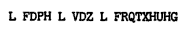
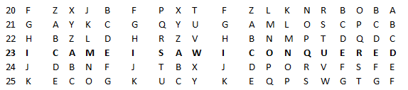

Origens da criptografia
O termo criptografia tem origem nas palavras gregas kryptós (oculto) e gráphein (escrita), significando literalmente “escrita escondida” ,é a prática de proteger informações transmitidas por um emissor para que possa ser interpretada apenas pelo destinatário pretendido com o conhecimento necessário para interpretá-la.Desde as civilizações antigas, especialmente em contextos militares, políticos e diplomáticos, já se empregavam métodos para ocultar informações estratégicas.Na Grécia Antiga, por exemplo, os espartanos utilizavam mecanismos físicos de codificação para proteger mensagens de guerra. Posteriormente, no Império Romano, o general e estadista Júlio César popularizou um método simples de substituição de letras, hoje conhecido como Cifra de César , utilizado para transmitir ordens aos seus comandantes no campo de batalha.
Com o avanço da sociedade e o surgimento das tecnologias digitais, a criptografia deixou de ser uma ferramenta restrita a governos e exércitos e passou a integrar o cotidiano das pessoas.Atualmente,ela é fundamental para garantir a privacidade das comunicações, a autenticação de usuários e proteção de dados pessoais dos usuários como informações bancárias,senhas e mensagens pessoais, especialmente em sistemas que utilizam criptografia de ponta a ponta.
Embora suas raízes remontem a milhares de anos, a criptografia, juntamente com a criptoanálise, é considerada um campo relativamente jovem. Os avanços mais expressivos ocorreram apenas nos últimos cem anos, acompanhando o surgimento da computação moderna no século XIX e o início da era digital. Foi nesse contexto que matemáticos, cientistas da computação e criptógrafos desenvolveram métodos robustos para assegurar a integridade e a confidencialidade dos dados contra ataques de hackers, cibercriminosos e curiosos.
Cifras e como funcionam
Uma cifra é um método usado para transformar uma mensagem original (texto claro) em uma versão codificada (texto cifrado), tornando seu conteúdo ilegível para quem não possui a chave ou o método correto de decodificação. Essa transformação pode acontecer de várias formas, como a substituição de letras, a troca por símbolos ou a reorganização da ordem dos caracteres.A segurança de uma cifra está diretamente ligada à dificuldade de quebrá-la. Um dos métodos mais comuns de ataque é a força bruta, que consiste em testar todas as combinações possíveis até encontrar a correta. Quanto maior o número de tentativas necessárias, mais segura a cifra tende a ser.Por exemplo, se uma cifra exige bilhões de tentativas para ser quebrada, mas um atacante encontra uma falha que reduz drasticamente esse número, podemos dizer que a cifra foi comprometida. Isso indica que ela não é tão resistente quanto se imaginava e precisa ser aprimorada para resistir a técnicas de criptoanálise mais avançadas.
Cifra de César
A Cifra de César é um exemplo clássico de cifra de substituição. Nesse tipo de cifra, cada letra da mensagem original é substituída por outra, seguindo uma regra fixa. No caso da cifra de César, essa regra consiste em deslocar as letras do alfabeto um determinado número de posições.
Por exemplo, ao usar um deslocamento de três posições, a letra A se torna D, B se torna E, e assim por diante. O destinatário da mensagem precisa saber exatamente qual deslocamento foi utilizado para conseguir decifrar corretamente o texto.
(Exemplo ilustrado conforme as imagens abaixo)

Combinações:

Assim, podemos ver que a única mensagem inteligível gerada a partir das combinações é a obtida quando movemos as letras 23 posições.A cifra de César é talvez a cifra histórica mais mencionada na literatura acadêmica,ela era utilizada para transmitir mensagens secretas aos generais do exército na linha de frente de guerra.Um dos métodos mais comuns para isso é a análise de frequência, que observa quais letras aparecem com mais frequência no texto cifrado e tenta associá-las às letras mais comuns do idioma original, como vogais e palavras curtas.
Cifra de Transposição
Uma cifra de transposição é aquela que, ao contrário da cifra de substituição, não substitui nenhum caractere da mensagem original, Em vez disso, ela apenas reorganiza a ordem das letras seguindo um padrão específico. Sendo assim, a segurança da mensagem depende do conhecimento desse padrão.
Um exemplo é a transposição colunar na qual a mensagem é escrita horizontalmente numa matriz de largura fixa e a saída é o texto lido verticalmente nessa matriz.
Texto original:A WIZARD IS NEVER LATE
Matriz:A W I Z A R D I S N E V E R L A T E
Texto cifrado:ADEWIRISLZNAAETRVE
Para quebrar uma cifra de transposição podemos testar todas as possíveis permutações dos caracteres. Porém, um texto de 20 caracteres geraria 20 possíveis permutações. Se computássemos 100 milhões de valores por segundo, demoraríamos mais de 300 anos para computar todos. Logo, testar todas as possibilidades é inviável. Por esse motivo, cada variação desse tipo de cifra exige abordagens específicas de criptoanálise, baseadas em padrões linguísticos e estatísticos.
Criptografia como forma de segurança
Na evolução da humanidade a comunicação exerceu e continua exercendo um papel muito importante,a necessidade de um indivíduo se comunicar com um grupo seleto de pessoas motivou o desenvolvimento de técnicas criptográficas cada vez mais sofisticadas.
Antes do desenvolvimento de sistemas postais e trasnmissões elétricas de mensagens,a maneira mais comum de mandar uma mensagem era através de um mensageiro privado. Mesmo assim, era recomendado o uso de uma técnica que “ocultasse” a mensagem a ser transportada, devido à possibilidade de que esse mensageira seja capturado de alguma maneira.
Durante a Segunda Guerra Mundial , a criptografia alcançou um papel estratégico decisivo. O trabalho de criptógrafos e matemáticos, incluindo Alan Turing, foi fundamental para decifrar o sistema alemão Enigma, contribuindo diretamente para o sucesso das Forças Aliadas. Além disso, esse esforço estabeleceu bases teóricas importantes para o desenvolvimento da computação moderna.
Após esse período,a criptografia passou a ser considerada uma questão de segurança nacional.Durante décadas, algoritmos e dispositivos criptográficos foram classificados e sujeitos a rígidos controles governamentais.Após sua utilização nas Guerras Mundiais,na década de 1970 o conhecimento criptográfico começou a se popularizar no meio acadêmico.Dispositivos criptográficos estavam sujeitos a controles de exportação e eram classificados como munições, principalmente nos EUA.
Com a evolução da tecnologia,surgiram métodos mais avançados,como o uso de curvas elípticas em campos finitos para a criptografia, desenvolvido a partir dos trabalhos de Neal Koblitz e Victor S.Miller.Esta abordagem passou a ser de uso comum em 2005,o esquema foi inovador por oferecer alto nível de segurança com menor custo computacional, sendo ideal para o uso em cartões inteligentes (cartões bancários, carteiras de identidade, etc.), smartphones,dispositivos IoT (objetos conectados) e sistemas de criptomoedas.
Atualmente, a criptografia é um dos pilares da segurança da informação, protegendo transações financeiras, comunicações digitais, assinaturas eletrônicas e dados pessoais. Sua presença é fundamental para a confiança e a estabilidade das relações digitais na sociedade contemporânea.